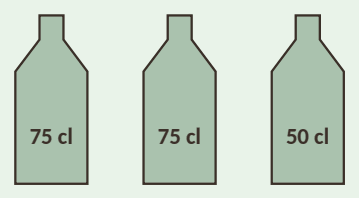

1Vad betyder prefixen?
2Skriv i watt (W).
3Skriv med lämpligt prefix, till exempel 5 km.
4Skriv i centimeter.
5Hur många millimeter är 3 m?
6Skriv längderna i storleksordning. Börja med den kortaste.
7Skriv vikterna i storleksordning. Börja med den lättaste.
8Vilka av volymerna är mer än 1 liter? Kryssa alla som stämmer.
9Hur många liter saft finns det i flaskorna tillsammans?

10Vilka volymer är lika stora? Välj den volym som är lika stor.
11Hur lång tid är det från 10.48 till 13.15?
12Bussen går 8.25. Resan tar 5 h 50 min. När kommer bussen fram?
13När klockan är 12.00 i Stockholm är den 6.00 i New York. Ett flyg går från Stockholm 13.00 och flyger 9 h. Vad är klockan i New York när planet landar?
14En bil kör med 70 km/h. Hur långt kommer den på
15Det är 16 mil till stugan. Familjen kör med 80 km/h. Hur lång tid tar resan?
16En båt åker 50 km på 2 h. Vilken medelhastighet har båten?
17En ritning är i skala 1:100. Ett rum är 4 cm långt och 3,5 cm brett på ritningen. Hur stort är rummet i verkligheten?
18En bokhylla är 1,8 m hög. Hur hög blir den på en ritning i skala 1:20?
19Två städer ligger 6 cm från varandra på en karta i skala 1:1 000 000. Hur långt är det mellan städerna?